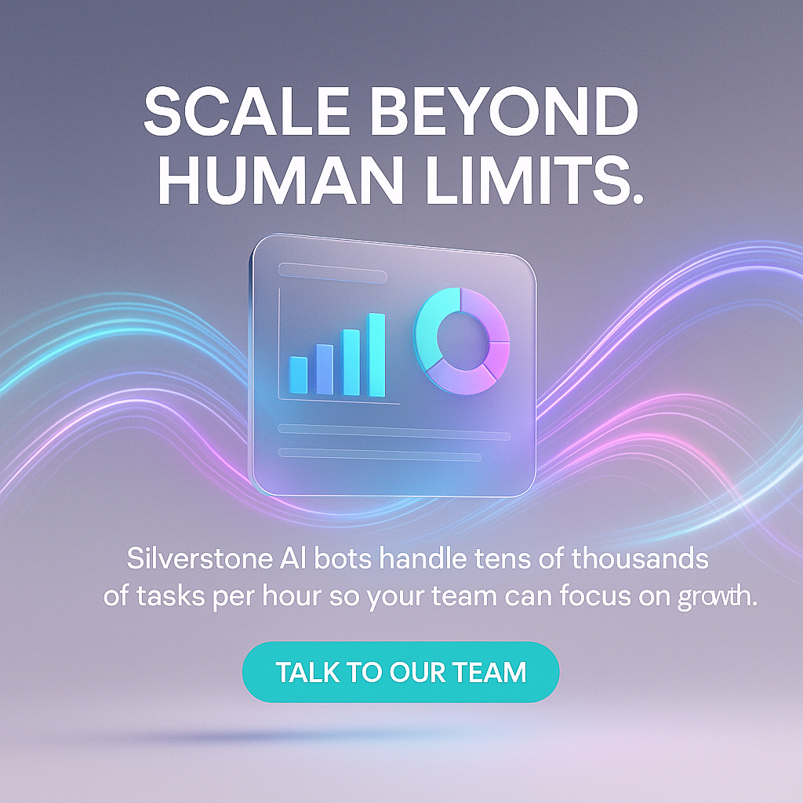
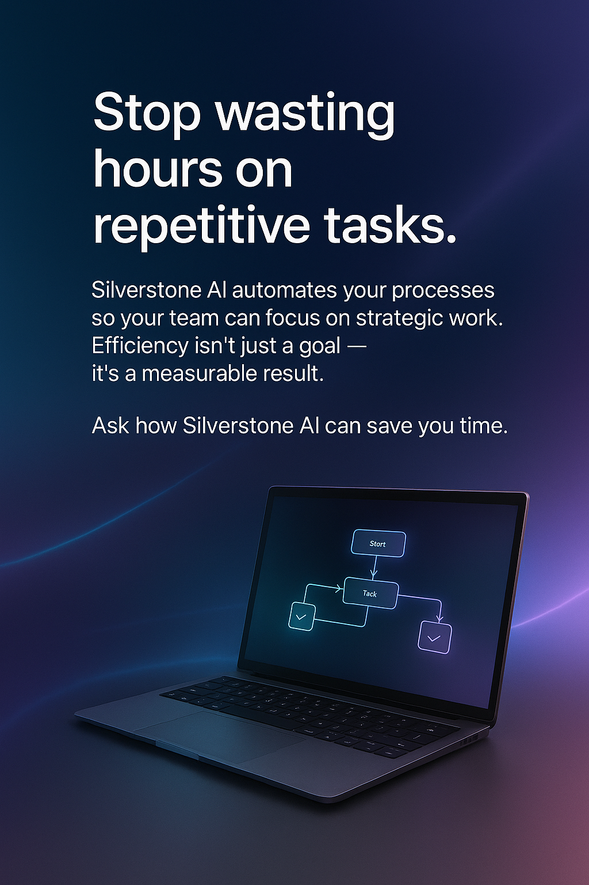
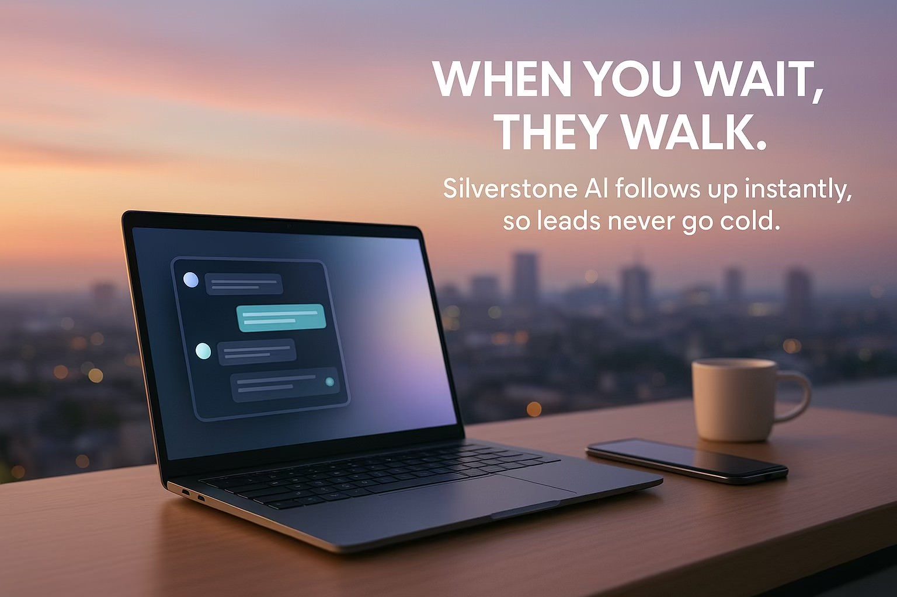
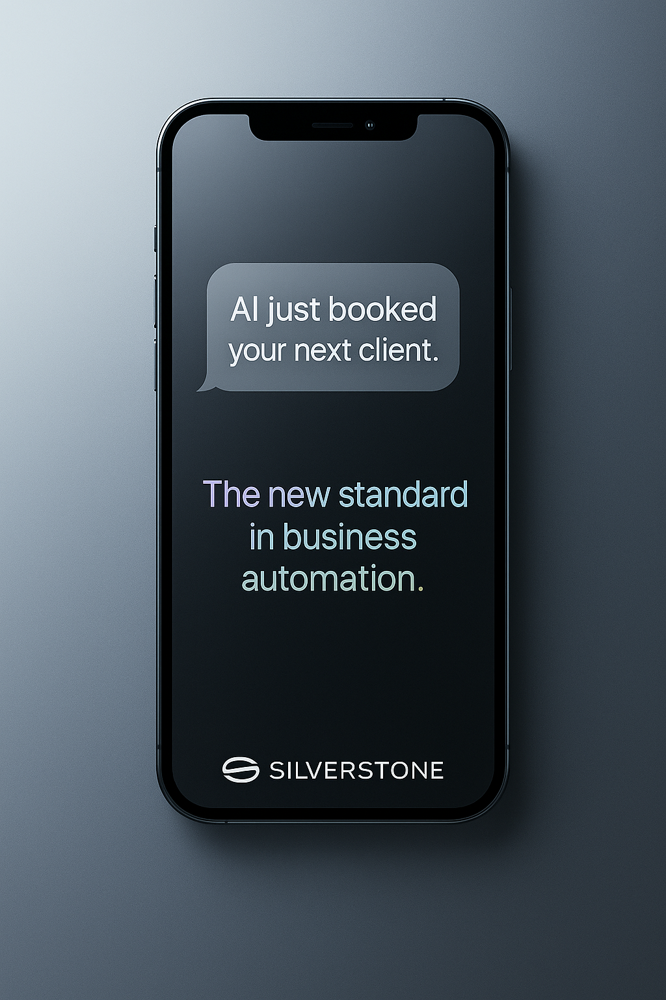
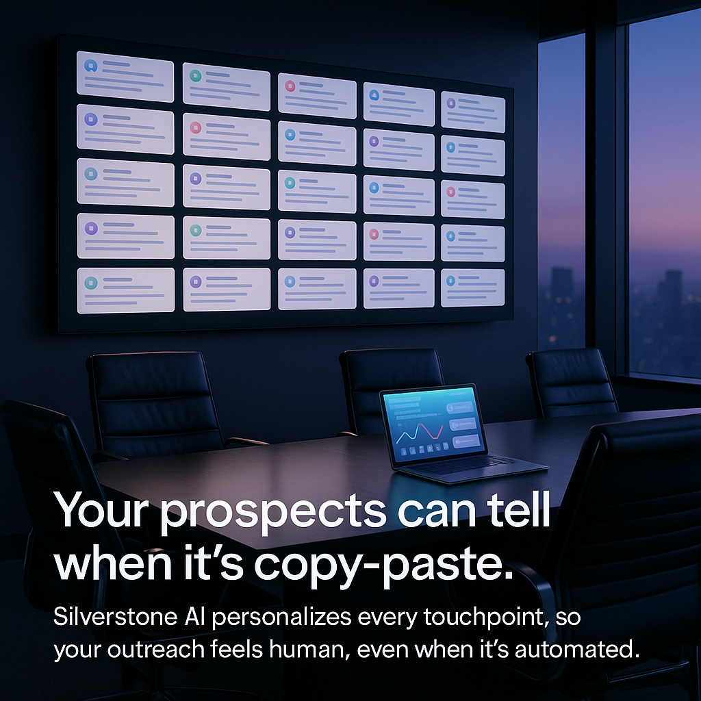
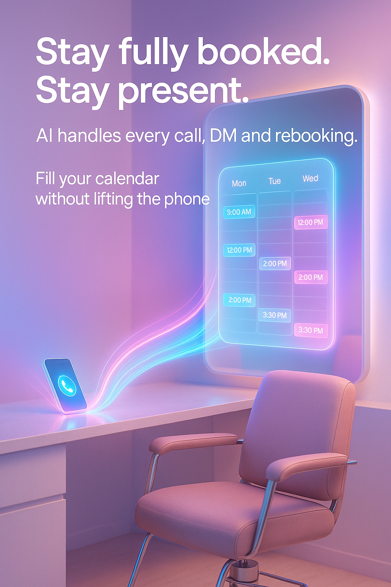
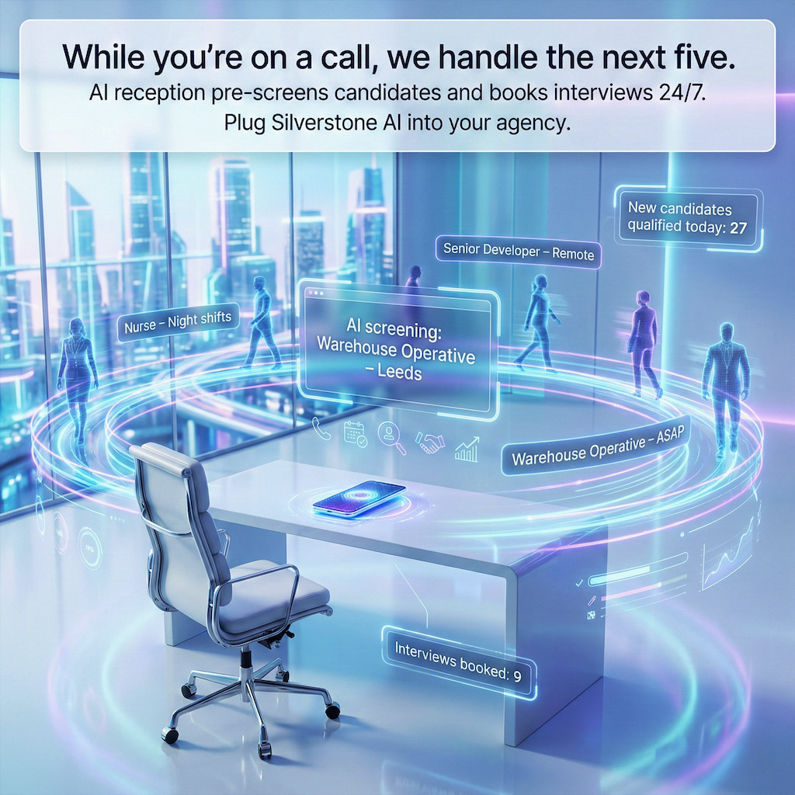

Choose a simple automation starting point.
From missed-call rescue to always-on virtual admin, our productised services help UK small businesses stop losing leads and hours to manual work.
From missed-call rescue to always-on virtual admin, our productised services help UK small businesses stop losing leads and hours to manual work.
Most small businesses do not have a demand problem - they have a response, follow-up, and admin overload problem.
If your phone rings while you are with customers, your inbox fills up overnight, and bookings rely on manual chasing, automation can take the repetitive load off your team - while keeping you in control.
Choose an industry pack or start with a general automation block. Everything is designed to sit on top of your existing tools - not replace them.
Our packs bundle the workflows most small businesses need: instant enquiry handling, structured qualification, booking and reminders, and consistent follow-up. We set it up, tune it to your tone of voice, and build in human handoff for anything sensitive or unusual.
Benchmarks vary by industry, but these patterns show up again and again when response and follow-up are manual.
Automation should make your business easier to buy from - and easier to run.
When enquiries are handled quickly and follow-up is consistent, you stop relying on memory, luck, and late nights to keep things moving.
We start with the fastest win, then expand only when it is working.
Map how enquiries, bookings and admin are handled today, and where time and revenue leak.
Choose one pack or workflow to implement first, based on impact and simplicity.
Integrate with your existing tools, test safely, then go live in a controlled way.
Improve wording and routing, add new journeys, and tighten reporting as patterns emerge.
Automation should protect your customer experience - not compromise it.
You see what is included before anything goes live. No invented guarantees.
Messages are written in your style, reviewed with you, and easy to adjust.
You decide what the system can and cannot do, with exceptions routed to a person.
We capture only what is needed and work within sensible data-protection practices.
Start with the bottleneck that is most expensive in time or missed revenue - usually speed-to-lead, no-shows, or follow-up. In the free automation audit, we map your current flow and recommend one small project that unlocks the most time back first.
No. Like the niche packs, general services are designed to sit on top of the systems you already use. Where direct integration is possible we connect it; where it is not, we design simple handovers that still keep your data accurate.
The aim is for interactions to feel like dealing with a switched-on member of your team. We keep language simple and helpful, and we build clear handoff rules so unusual or sensitive conversations go straight to a human.
Typically: website forms, web chat, email, messaging channels, and calendars. Where it makes sense, we also design missed-call capture and call-handling flows. We prioritise the channels your customers already use, so you are not forced into a new platform.
We build from your existing scripts and preferred wording, then review everything with you before launch. For regulated or sensitive contexts, we keep automation scoped to appropriate tasks (reminders, routing, information) and hand off anything outside agreed boundaries.
Yes. We follow sensible data-protection practices, capture only what is genuinely needed, and keep data within tools you are comfortable using. You control what is stored, who can access it, and what is passed into other systems.
Yes. Most clients start with one journey (for example, instant enquiry handling or reminders) and expand once it is delivering value. Automation should feel like a steady upgrade, not a risky overhaul.
A glimpse into the ideas and technology that inspire our work.







When the right workflows are automated, owners typically reclaim time, reduce no‑shows and make better use of their team.
Less manual admin and chasing.
Automated reminders and confirmations.
Always‑on first reply.
These outcomes reflect wider automation case studies and research, not guaranteed results. We’ll work with you to set realistic expectations for your business.
We’ll help you choose one small project that unlocks the most time back first.
Book a Free 30‑Minute Automation Audit